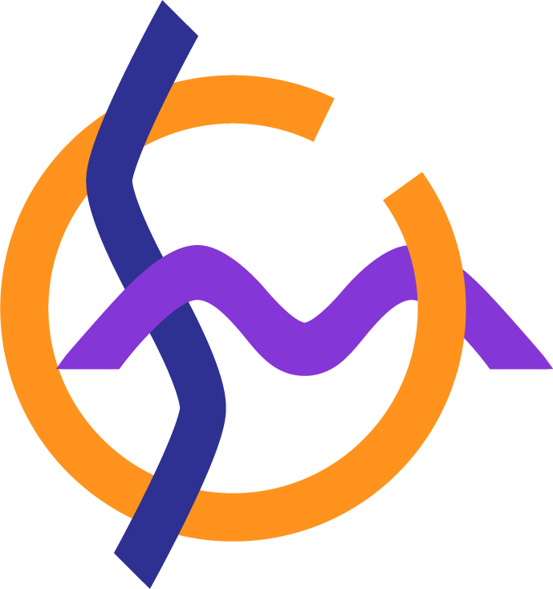
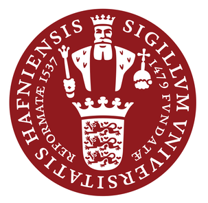

Data-Driven Representations of Cislunar Trajectories
Colorado Center for Astrodynamics Research, Boulder, CO
Dates: 08/2024-Present
Principal Investigator: Professor Dan Scheeres
Undergraduate Research
While at Caltech, I was able to take part in multiple research projects through the Summer Undergraduate Research Fellowship (SURF) program.
Measurements of a Quantum Spin Glass
Caltech, Pasadena, CA

High-Redshift Galaxy Evolution
Niels Bohr Institute, Copenhagen, Denmark
Dates: 06/2021-09/2021 (DK), 09/2021-01/2023 (USA)
Principal Investigator: Professor Charles Steinhardt
Read More